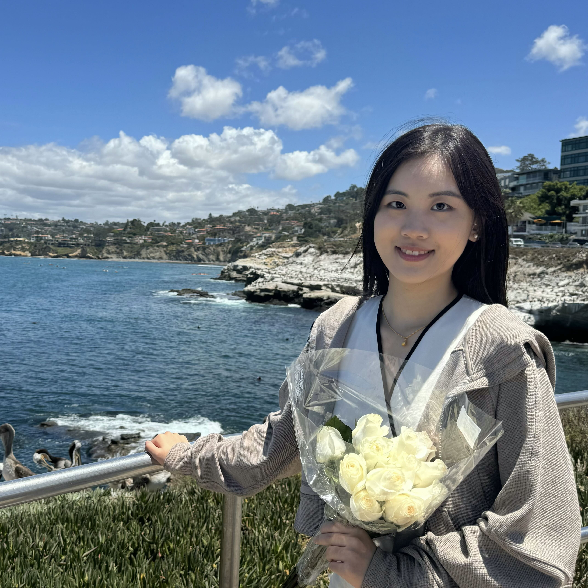
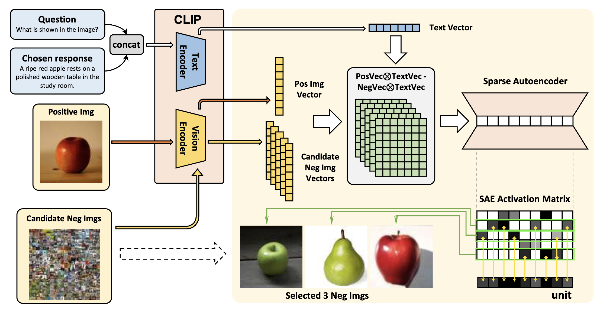
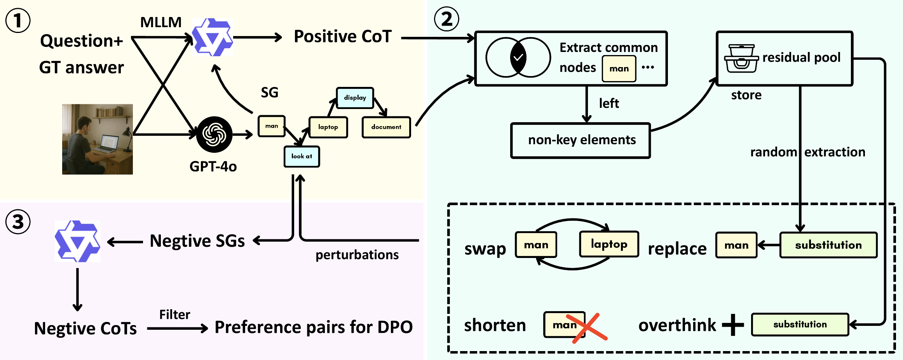
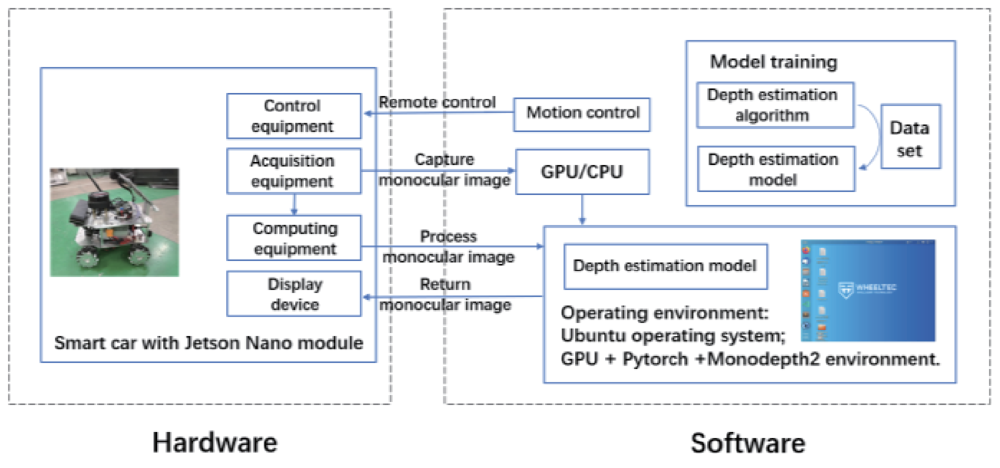

|
Chuhan Wang
Hi there!😄 I'm a Ph.D. student in Computer Science at the
University of Notre Dame,
advised by Prof. Meng Jiang.
My research focuses on improving the faithfulness and trustworthiness of
multimodal large language models, aiming to make their reasoning more
reliable and better grounded in what they actually perceive.
Feel free to reach out for any form of communication or collaboration!
Email /
CV /
Google Scholar /
Github /
LinkedIn
|

|
News
- [2026.04] Our paper SceneAlign was accepted to ACL 2026 Main Conference!
- [2026.01] Our paper MISP-DPO was accepted to ICLR 2026!
|
Selected Publications (* indicates equal contribution)
|
|

|
Importance Sampling for Multi-Negative Multimodal Direct Preference Optimization
Xintong Li*,
Chuhan Wang*,
Junda Wu, Rohan Surana, Tong Yu, Julian McAuley, Jingbo Shang, et al.
ICLR, 2026
arXiv
MISP-DPO incorporates multiple semantically diverse negative images into multimodal DPO via a Plackett-Luce objective, using a sparse autoencoder to select informative negatives and importance sampling for efficient training.
|
|

|
SceneAlign: Aligning Multimodal Reasoning to Scene Graphs in Complex Visual Scenes
Chuhan Wang*,
Xintong Li*,
Jennifer Yuntong Zhang, Junda Wu, Chengkai Huang, Lina Yao, Julian McAuley, Jingbo Shang
ACL, 2026
arXiv
SceneAlign uses scene graphs to perform controllable structural interventions, building hard negative rationales for DPO that steer multimodal models toward fine-grained, structure-faithful reasoning.
|
|

|
Customized Training and Application of Monocular Depth Ranging for Assisted Driving
Jingwen Li,
Chuhan Wang,
Pengwei Zhang, Ruipeng Gao, Dan Tao
ICCE-TW, 2023
IEEE
A monocular depth ranging method combining a deep learning algorithm with a Jetson Nano-based sensor for assisted driving.
|
Education
- Ph.D. in Computer Science, University of Notre Dame (2026 – present)
- M.S. in Computer Science, University of California San Diego (2024 – 2026)
- B.Eng. in Electronic Engineering, Beijing Jiaotong University (2020 – 2024)
|
|
{kind=link}